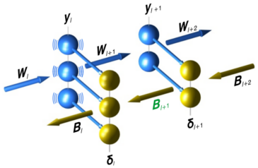
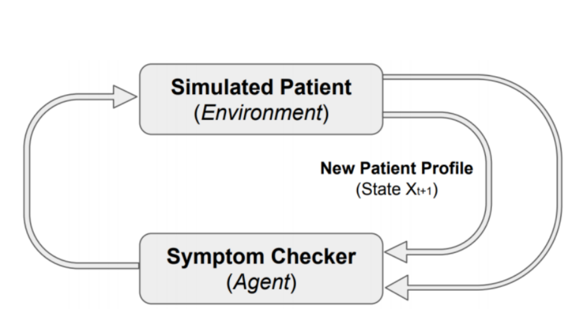
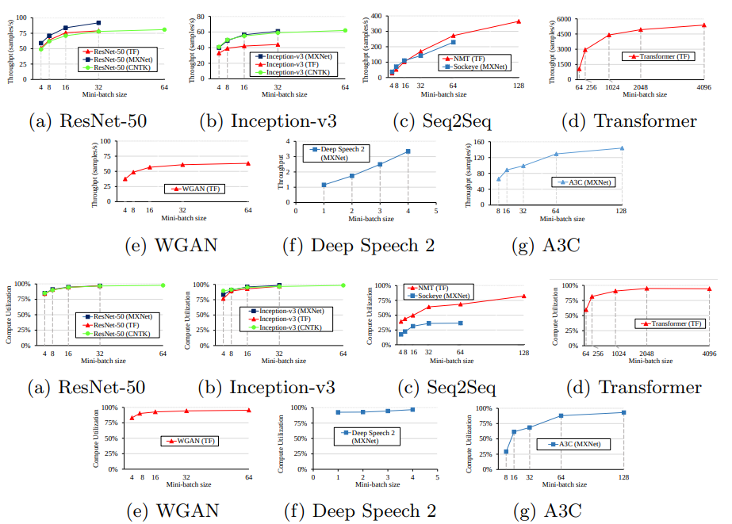

I'm a Research Scientist at Triage in Toronto, Canada working on Healthcare and Machine Learning. I'm interested in studying general principles of intelligence in the brain and investigating how biologically plausible neural networks models enable memory, learning and behaviour with minimal supervision in real-world environments. I am seeking to understand the computational issues in terms of efficiency and realtime adaptation. To answer these sort of questions about the underlying mechanisms in the brain, one need to know more about mathematical models in general with extra biological constraints.
I recently completed my Masters at University of Toronto under the supervision of Prof. Amir-massoud Farahmand. While at UofT, I was also closely collaborating with Prof. Douglas Tweed's Neuroscience group.
Before graduate school, I enrolled in a dual undergraduate degree program where I studied Computer Science at Polytechnique Montréal and both Statistics and Economy at Télécom ParisTech where I collaborated with Prof. David Bounie to build an automated system to analyze millions of payment transactions. In May 2017, I interned at Ecole normale supérieure in Prof. Srdjan Ostojic's group to study finite rank perturbations of a computational neuroscience model based on Echo State Networks.
|  |
Deep Learning without Weight Transport NeurIPS 2019, under submission M. Akrout, C. Wilson, P. C. Humphreys, T. Lillicrap, D. Tweed |
|---|
|  |
Improving Skin Condition Classification with a Visual Symptom Checker trained using Reinforcement Learning MICCAI 2019 M. Akrout, A.M. Farahmand, T Jarmain, L. Abid |
|---|
|  |
TBD: Benchmarking and Analyzing Deep Neural Network Training IISWC, 2018 H. Zhu, M. Akrout, B Zheng, A. Pelegris, A. Phanishayee B. Schroeder, G. Pekhimenko |
|---|
Workshop PublicationsHacking Google reCAPTCHA v3 using Reinforcement LearningRLDM Workshop, 2019 I. Akrout*, Amal Feriani*, M. Akrout pdf Q&A-informed image-based deep learning for skin disease recognition in the real world SOCML Workshop, 2018 A. Romero-Lopez, T. Jarmain, L. Abid, J. Maltais, A. Jimenez, J. Kawahara, G. Hamarneh S. Ao, M. Akrout, A. Challa, M. Aristocrat, K. Cirone, S. Solis, A. McCann pdf Improving Skin Condition Classification with a Question Answering Model NIPS Workshop on Medical Imaging, 2018 M. Akrout, A.M. Farahmand, T Jarmain pdf |
|---|